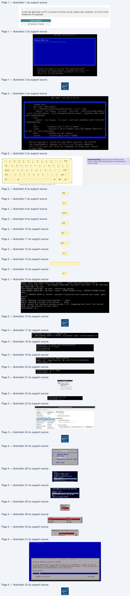
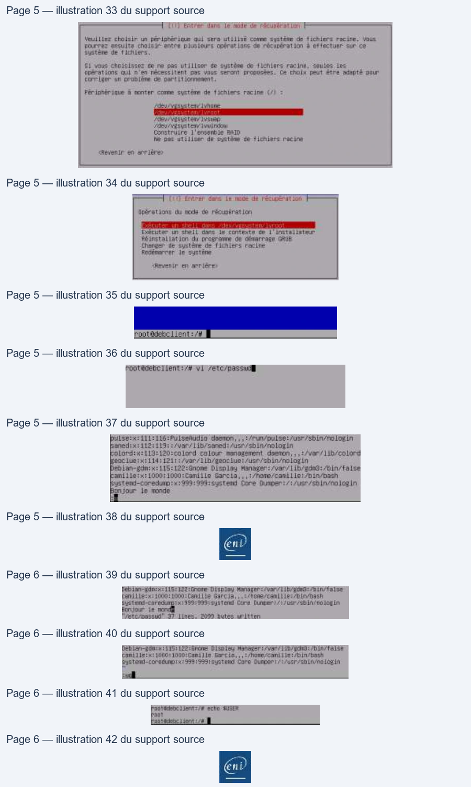

Transcription du document du Drive TSSR. La mise en forme est adaptée au Web ; les compléments IA du portail sont présentés séparément.
Administration Debian GNU-Linux
TP du Module 04 – Debian en mode maintenance
Avant de démarrer ce TP, il convient d’avoir suivi les vidéos des modules 1 à 4 et d’avoir
réalisé les TP proposés.
Durée estimée
30 minutes à 1 heure
Solution
I.
Sur le serveur Debian sans environnement graphique
Utiliser le menu GRUB pour démarrer le serveur en mode maintenance et sans avoir besoin
de s’authentifier avec le mot de passe de root (voir support de cours)
Sur le menu de démarrage Grub, appuyer sur la touche ‘e’
Page 1/6
© ENI – Tous droits réservés
BE
Administration Debian GNU-Linux
Chercher la ligne commencant par "linux" , à la fin de celle-ci remplacer 'quiet' par 'init=/bin/bash'
Attention : clavier en qwerty US
Appuyer sur F10 pour lancer le système
Commenté [MC1]: Image dans le domaine public.
Source : https://freesvg.org/golden-qwerty-keyboard-
vector-image
Mappage de touche au format qwerty US
Une session root est ouverte sans besoin d'authentification
Page 2/6
© ENI – Tous droits réservés
GNU
GRUB
version
2.04-20
insmod ext2
Î
set
root='hd@,msdos1
if
[
x$feature_platform_search_hint
=
xy
];
ther
search
--no-floppy
--fs-uuid
--set=root
--hint-bios=hd@,msdos1
hint-efishd@,msdos1
--hint-baremetal=ahcig,msdosi
edez2@chi-adb?-4445
-8df7-8d9d5e5Sc8ed
else
search
no-f loppy
fs-uuid
set=root
ede20ch1-adh7-4445-8df
7-8d9d5e5Sc8ed
fi
echo
‘Loading
Linux
5.10.0-9-amd64
...'
linux
vmlinuz-5.10.0-9-amd64
root=/dev/mapper/debsrve1--
vg-root
ro
init=/bin/bash_
echo
‘Loading
initial ramdisk
...'
initrd
initrd. img-5.16.6-9-amd64
|
Edition basique
à
l'écran
de type Emacs
possible.
Tab affiche
les
complétements.
Appuyez
sur
Ctrl-x
ou
F18
pour
démarrer,
Ctrl-c
ou
F2 pour
une
invite
de
commandes
ou Echap pour
revenir
au
menu
GRUB.
=
!
yyy
sar
am)
(
)
= | + | Bksp
1
2
3
4
5
6
7
8
9
0
-
=
Tab
Q
wie
R |
LT,
y |
[u
I
oP
{
}
|
[
]
\
Capstk
A
S$
DF
G
H |
{J
KL
:
Enter
Shift
Z
x
[a
v
B
N
M
<
>
?
Shift
0
5
/
Ctrl
Alt
Alt
B
Ctrl
Begin:
Will
now check root
file
system
...
fsck
from util-linux
2.36.1
[/sbin/fsck.ext4
(1)
-- /dev/mapper/debsrv@1--vg-root]
fsck.ext4
-a
-C@
/dev/map
per/debsrv@1--vg-root
/dev/mapper/debsrv@1--vg-root:
recovering journal
/dev/mapper/debsrv@1--vg-root:
clean,
31287/143424
files,
238181/573448
blocks
done.
[
2.781693]
EXT4-fs
(dm-@):
mounted
filesystem
with ordered
data mode.
Opts:
(null)
done.
Begin:
Running
/scripts/local-bottom
...
done.
Begin:
Running /scripts/init-bottom
...
done.
bash:
cannot
set
terminal
process
group
(-1):
Inappropriate
ioctl
for
device
bash:
no
job
control
in
this
shell
root@(none):/#
_
Administration Debian GNU-Linux
•
Activer l’écriture sur la partition racine.
Saisir la commande " mount -o remount,rw / "
Le message qui suit est une information, pas une erreur.
•
Pouvez-vous créer un fichier dans l’espace personnel du compte root ?
Une commande touch dans /root ne renvoi pas de message d'erreur,
le ficher a bien été créée
•
Pouvez-vous accéder au répertoire personnel de l’utilisateur créé à l’installation ?
Impossible de se déplacer dans le dossier de l'utilisateur standard
•
Est-ce normal ?
Le dossier /home est vide.
Le dossier /home a été place sur un autre Volume Logique que la partition racine.
Seule cette dernière est directement accessible dans ce cas.
→
Utiliser la commande sync pour s’assurer que toute modification apportée est effectivement écrite ;
puis forcer l'extinction du serveur par les options de VMware Workstation
II.
Sur le serveur Debian avec environnement graphique
Démarrer dans le "Rescue mode" (dans "Advanced options") à partir de l'ISO d'installation
Debian* :
Vérifiez dans les paramètres de la VM que l'image CD est bien sélectionnée
et que la case "Connect at power on" est bien cochée
Page 3/6
© ENI – Tous droits réservés
86.615438)
EXTA
#-8):
re-mounted.
Opts:
err
emount-r
bash:
cd:
/home/caniile:
N
ch
file
or
direct
NE|
Hp
EE
EE
ARter
ee
Device
ummary
Device Status
End
Administration Debian GNU-Linux
Mettre le focus dans la VM est cliquer sur "echap" au logo vmware.
Si le menu grub s’affiche, saisir la sequence ‘ctrl+alt+ins’ avant de réappuyer sur ‘echap’
Enfin valider le démarrage sur le CD-Rom
→
Choisir 'Advanced options' puis Rescue mode''
•
Sélectionner la langue, le nom (comme lors d'une installation)
→
→
Saisir la langue et la disposition du clavier
Saisie du nom d'hôte. Remarquez la mention 'mode de récupération' en haut de l'écran
•
Sélectionner le système de fichiers racine à monter
Page 4/6
© ENI – Tous droits réservés
1
Removable Devices
2
lard Urlee
4.
Aetuoek mont trom betel E1OHD
efter Sintiy?
late ALLIE
Farkarr moras AINE tad
tek
2
phil
mort
ratez
1
nées
|
NE cars ter:
HUE
ition
Be ei
FES
:
Gecrsien
©
dstacen
EE:
Céngien
[|
or ere |
Veullies indique le rom de ce systéne,
LE non de Neching
est un mot unique qui itentifile le syeténe ur Je récesu, 81 vous re
connaissez
por ce non, demndez-le à votre administrateur résequ. Si vous Installez votre
propre résnay, vous POUVOZ FAUNE co QUE your voulez,
Mon de machine +
ETAT7
Fevenin on arrières
Cant Louer
Env

Administration Debian GNU-Linux
Ici il faut bien choisir le Volume Logique contenant le système de fichier racine.
Remarquons l’importance des noms explicites pour les Groupes de Volumes & Volumes Logiques.
Choisir la première option pour avoir accès à notre système Debian installé
Noter l’option “Reinstallation de Grub”, utile pour dépanner un système qui ne démarre pas
Après validation d'un message informatif, un shell root s'ouvre sans authentification
Accédez au fichier /etc/passwd sur votre disque dur.
Ouvrir le ficher avec VI
•
Pouvez-vous le modifier ? (attention à ne rien casser !!)
Se déplacer en fin de fichier [G],
Passer en mode insertion avec une nouvelle ligne [o],
Saisir du texte puis revenir en mode commande [echap],
Enregistrer sans quitter (:w)
Page 5/6
© ENI – Tous droits réservés
Administration Debian GNU-Linux
Un message nous informe de la bonne écriture dans le fichier
Supprimer la ligne que vous venez d'écrire (et seulement celle-ci) (dd)
Enregistrer et quitter (:wq)
•
Avec quel utilisateur êtes-vous connecté ?
La variable d'environnement USER nous renvoie la valeur 'root'
également lisible simplement dans le prompt bash.
NB : la commande ‘logname’ ne renvoie rien dans ce cas particulier
•
Avez-vous indiqué un mot de passe ?
Non, comme vue précédemment, un shell root s'ouvre sans authentication dans ce type de cas
Page 6/6
© ENI – Tous droits réservés
